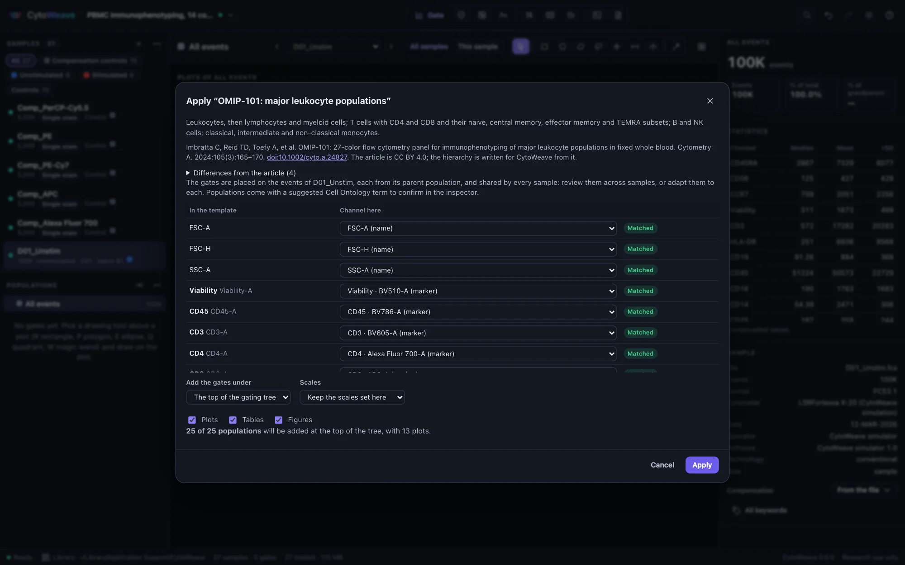
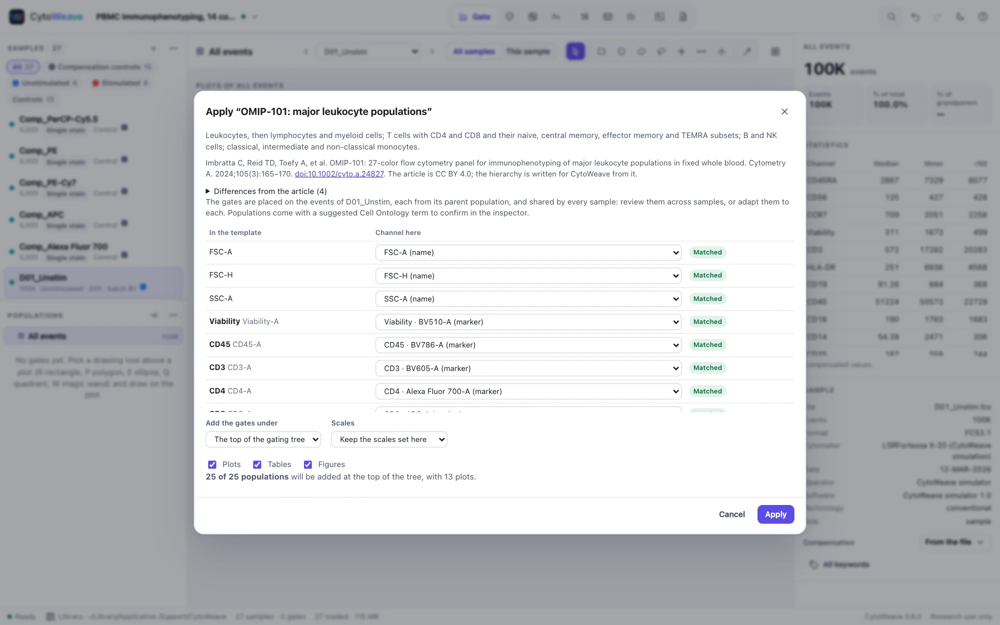
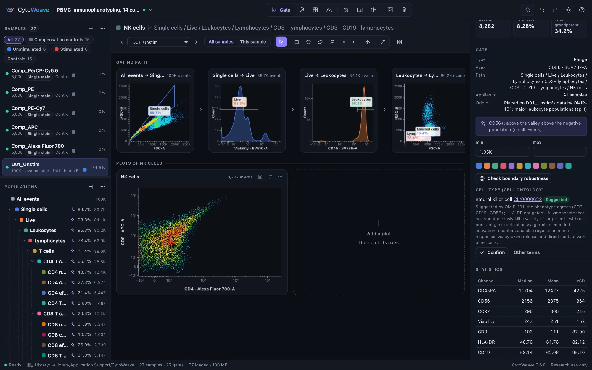
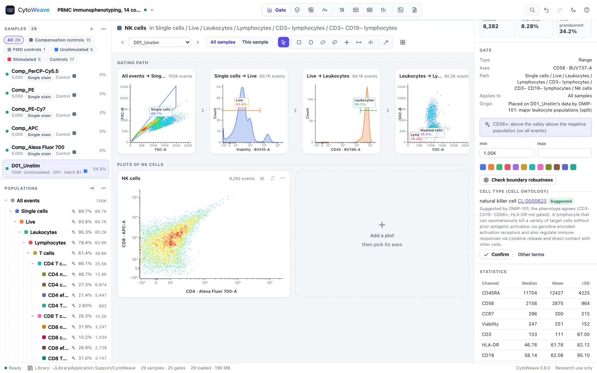

Templates and cell types
Reuse an analysis on the next experiment, start from a published gating strategy, and say which cell type each population is, in terms other tools understand.
Analysis templates
A template keeps an analysis so that it can be applied to another experiment, even one acquired on another instrument with the markers on other detectors.
Saving a template
Workspace → Save as a template keeps the whole gating tree, or the selected population and those under it, with:
- the gates, each in its own channels' scale;
- the channels' scales and labels;
- the plots, tables and figure layouts that use those populations;
- which compensation the samples used (the files' matrix or a computed one).
Save it to the library, where every workspace can use it, or download it as a .cwt file to send to a colleague. Gates on computed channels (clusters, unmixed channels) and per-sample adjustments are not kept, and the dialog says so. A "QC pass" gate is left out, and the populations under it move up to its parent: run QC on the new experiment and gate on its own result.
Applying a template
Workspace → Apply a template lists the templates in the library and the published strategies; a .cwt file can also be opened or dropped on the window. Each of the template's channels is matched to one of yours:
- a fluorescence channel by its marker (CD3 is CD3 on FITC or on BV605), preferring the same area, height or width;
- scatter and time channels by name;
- a marker written only in a channel's label (
CD3 APC-H7) is found too, and spellings are compared loosely (HLA-DR and HLADR).
The preview shows how each channel matched and lets you choose another. It says how many populations will be added and which will be left out and why: a population on a marker your panel does not have is left out with the populations under it, and the rest are added. You can put the gates under any population (say, under your own singlet gate), keep your scales or use the template's, and choose whether its plots, tables and figures come too.
Gates keep their position in data values. On another instrument or with other voltages a gate may need moving: review it across samples, or adapt it to each sample.
Published gating strategies


Two published gating strategies come with CytoWeave, in the same dialog:
| Strategy | Populations |
|---|---|
| OMIP-101: major leukocyte populations (Imbratta et al., Cytometry A 2024) | Single, live cells and leukocytes; lymphocytes and myeloid cells; T cells, CD4 and CD8 T cells and their naive, central memory, effector memory and TEMRA subsets; B cells; NK cells; classical, intermediate and non-classical monocytes (25 gates) |
| OMIP-090: regulatory T cells (Stroukov et al., Cytometry A 2023) | Lymphocytes, single and live cells, CD3+ CD4+ T cells, and Tregs as CD25-high CD127-low (5 gates) |
Each is written for CytoWeave from the article's gating hierarchy and lists where it departs from the article: for example, OMIP-101 separates lymphocytes and myeloid cells on scatter where the article uses CD33, and adds a viability gate. Both articles are open access (CC BY 4.0). The dialog shows the citation, with a link.
A strategy's gates are not fixed outlines: each is placed on the events of the current sample, in its parent population, as an analyst would place it:
| Gate | Placed |
|---|---|
| Lymphocytes, myeloid cells | At the lymphocytes' and monocytes' density peaks on forward against side scatter (debris against the left edge left out) |
| Single cells | On forward-scatter area against height |
| Positive cells (CD45+, CD3+, HLA-DR+…) | Above the negative population as all events show it, the way a fluorescence-minus-one control would show it, so that a parent whose cells are all positive (monocytes and dendritic cells on HLA-DR) is not cut between them |
| Negative cells (live, CD3−…) | Below the valley under the brightest population, so that dim autofluorescent cells (monocytes on a viability dye) stay |
| Quadrants (CD4 and CD8, CD45RA and CCR7) | On one divider per axis shared by the four populations, at the valley between the two main populations |
| Tregs | CD127-low first, then CD25-high among the CD127-low cells, where the Tregs form a population of their own |
| Intermediate monocytes | CD14+ cells above the upper edge of the CD16-negative classical monocytes |
Each placed gate says in the inspector where it was put and why, and is then an ordinary gate: shared by every sample, editable, and adaptable to each sample where the data shift. Each population comes with the Cell Ontology term the article's phenotype denotes, as a suggestion to confirm (below).
On the PBMC example, placed on one sample and shared by all twelve, the strategies' populations match the simulator's true cell types with a median F1 of 0.96–0.99 for the lineages, 0.88–0.96 for the memory subsets, NK cells and classical and non-classical monocytes, and 0.91 for Tregs (0.82–0.85 in the stimulated samples, where conventional T cells raise CD25). Intermediate monocytes, which lie between the classical and non-classical ones on CD16, reach 0.76. See Validation.
Cell types (Cell Ontology)


The Cell Ontology gives cell types identifiers that databases, repositories and other tools share: "CD4-positive, alpha-beta T cell" is CL:0000624 whatever the gate is called. Select a population, and the inspector's Cell type section suggests a term from the population's phenotype:
- which side of each gate's markers the population lies on along its path (CD3+, CD4+, CD8−), read from the gates and the data;
- for scatter gates, where the population sits: lymphoid, monocytic or granulocytic.
The population's name is never used, so "Q3" and "CD4 T cells" get the same suggestion. A suggestion is exact when every marker the term requires is gated, and likely when only some of its negative markers are not (CD4 T cells without a CD8 gate). The inspector shows the markers it rests on and the term's definition, with a link to the term in the EBI Ontology Lookup Service. Confirm it, or choose another under Other terms.
CytoWeave knows 89 terms for the populations gated in blood, PBMC and lymphoid tissue, each with the phenotype that defines it: the conventional phenotypes of Maecker, McCoy and Nussenblatt (2012) and the OMIPs where they exist, otherwise the Cell Ontology's own marker definitions. A more specific term that fits on evidence its parent lacks comes first (CD3+ cells are T cells before leukocytes), and a term is not suggested when the phenotype contradicts one of its parents' (CD8+ cells are not CD4-positive memory T cells).
Confirmed terms go into:
- FlowJo workspace exports, as each population's annotation;
- Gating-ML exports, and back again on import;
- the Tables view, under each population's columns (CSV files keep one header row);
- the methods text, with the Cell Ontology reference.
CLR files keep populations' names only: the CLR format has no field for a term. Templates and strategies carry their terms as suggestions, to be confirmed on the new data.
The terms' labels, synonyms and definitions are from the Cell Ontology, release 2026-06-08, under the Creative Commons Attribution 4.0 license (Tan SZK et al., Sci Data 13, 946, 2026). On 40 populations that experts named in three public workspaces, every top suggestion was a term the name denotes, and none changed when the gates were renamed.
With an AI agent
Agents have save_template, list_templates and apply_template (which takes a strategy too: omip-101), and suggest_cell_types, which lists each population's suggestions and can propose the top terms for you to confirm. As always, the agent's gates and terms are proposals you accept or reject.